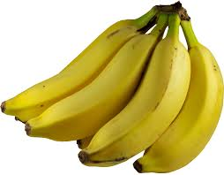
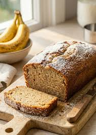

Banana Bread
Banana bread is a type of sweet bread or cake made from over-riped mashed bananas.
It requires a fair amount of fat to keep it moist and lighten the crumb, and just enough sweetness
to enhance the flavor of the bananas.
Banana bread is typically classified as a quick bread, relying on chemical leavening agents such as
baking soda or baking powder rather than yeast,
which allows it to be prepared without fermentation.


The recipe for banana bread is quite simple, and can be made with a variety of ingredients.
The basic ingredients include flour, sugar, eggs, butter, and of course, bananas.
Some recipes may also include additional ingredients such as nuts, chocolate chips, or
spices like cinnamon.
Ingredients
- 3-4 ripe bananas, mashed
- 1.5 cups all-purpose flour
- 1/3 cup melted butter
- 1 tsp vanilla extract
- 1 teaspoon baking soda
- Pinch of salt
- 1/4 cup brown sugar
- 1 egg
Steps
- Preheat the oven to 350°F (175°C) and grease a 4x8 inch loaf pan.
- In a mixing bowl, mash the ripe bananas with a fork until smooth.
- Stir the melted butter into the mashed bananas.
- Stir in the brown sugar.
- Mix in the beaten eggs and vanilla extract until well combined.
- In a separate medium bowl, whisk together the flour, baking soda, and salt.
- Gradually add the dry ingredients to the banana mixture, stirring until just combined.
- Pour the batter into the prepared loaf pan and smooth the top with a spatula.
- Bake for 60-65 minutes, or until a toothpick inserted into the center comes out clean.
- Remove the banana bread from the oven and let it cool before slicing